What do vowels sound like?
Source-Filter Theory
What do consonants sound like?
These are individual glottal pulses
Higher pitched voices will have…?
/bi/, /bid/, /bit/

A vowel is voicing passing through (and resonating in) an unobstructed vocal tract!
If we change the position of the tongue, we change the resonances

A vowel is voicing passing through (and resonating in) an unobstructed vocal tract!
If we change the position of the tongue, we change the resonances
Different resonances filter the sound differently and determine the vowel quality
Different tongue shapes create different resonances, and different vowels!

We talk about vowel quality in terms of “formants”
These are bands of the spectrum where the energy is strongest
The frequencies of these formants are our primary cues to vowels

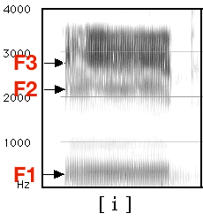

Different American English vowels, as spoken by a male speaker

Different American English vowels, as spoken by a male speaker
Important for understanding speech production and perception
Key to being able to discuss vowel formants
Useful for understanding many elements of speech processing
 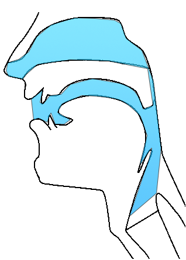
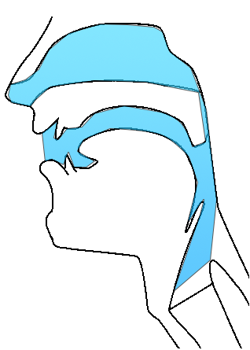
‘Source’ and ‘Filter’


Filters that ugly signal by changing the position of articulators
What do I mean by filter?
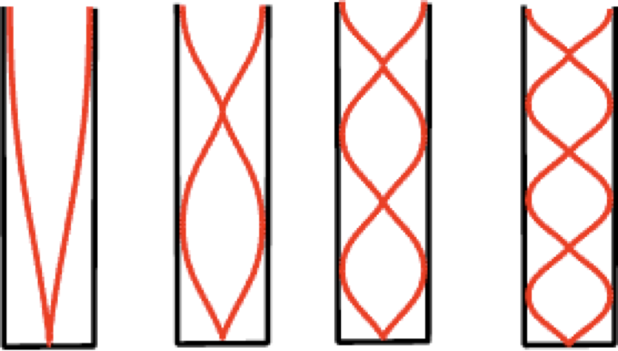
Some wavelengths ‘fit’ well within a cavity of a given size or shape
Sound at those wavelengths will grow stronger because they ‘resonate’
Sound at other wavelengths will grow quieter and are ‘damped’

Some spectral regions are made stronger (‘poles’ or ‘formants’)
Some spectral regions are made weaker (by ‘zeroes’ or ‘antiformants’)
Some pass through (relatively) unaffected
… and this is how vowels work
Changing the position of the articulators affects the size and shape of the cavity
Changing the position of articulators in your vocal tract affects resonances
(The source signal)


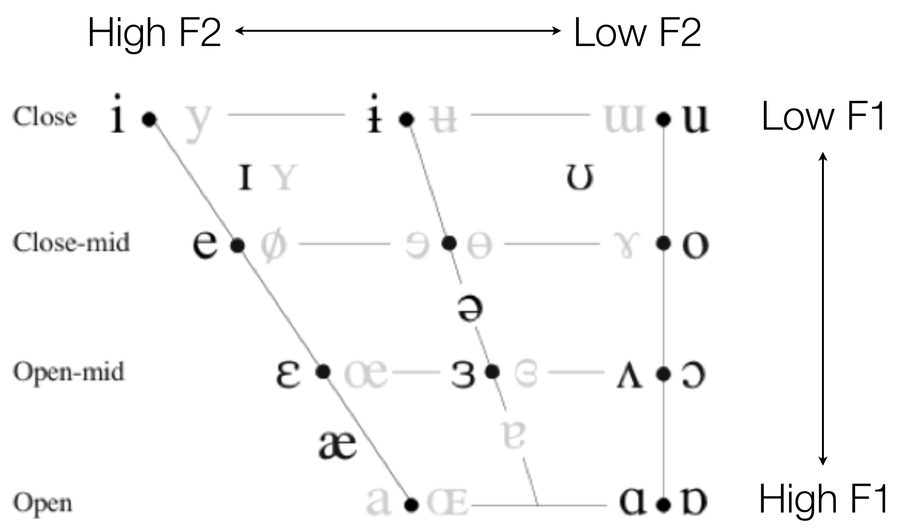
The larynx produces a signal with lots of harmonics
The rest of the vocal tract filters it into something we recognize as “speech”
Vowel perception is formant based
Formants give us information about what the tongue is doing even when no closures are being made
Formants tell me what your tongue is doing in the mouth!
Studying vowel quality is usually done using formants
Formants tell me what your tongue is doing in the mouth
“The vocal folds produce harmonics”
“Resonance changes harmonics, does it create separate formants?”
“Where can I see the formants in a spectral slice?”


 |
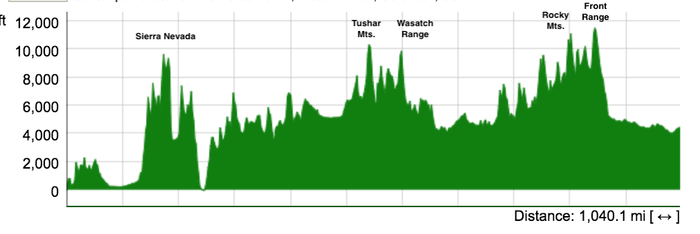

Where harmonics of the source are amplified, rather than damped
This indicates certain positions for the tongue in the mouth
One final, crucial point…


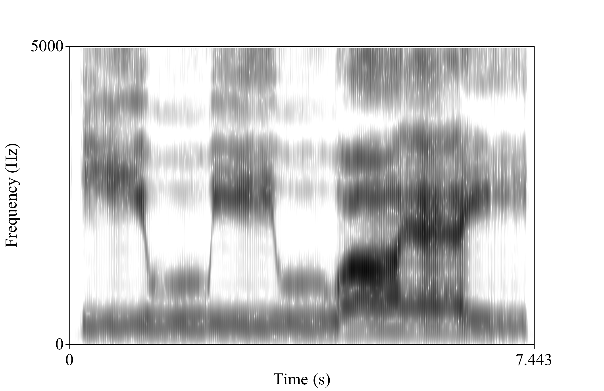

The vocal folds provide a source signal for speech
The rest of the vocal tract filters that source into identifiable sounds
We call those ranges of harmonics that resonate with a certain articulation “Formants”
These resonances tell us how the vocal tract is being shaped at that moment
Formants are crucial for percieving (and measuring) vowels
The Source and the Filter are independent
They vary depending on the tongue’s position
Different formants from the same speaker mean different vowels


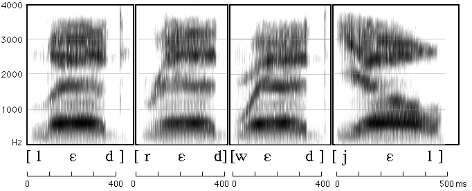


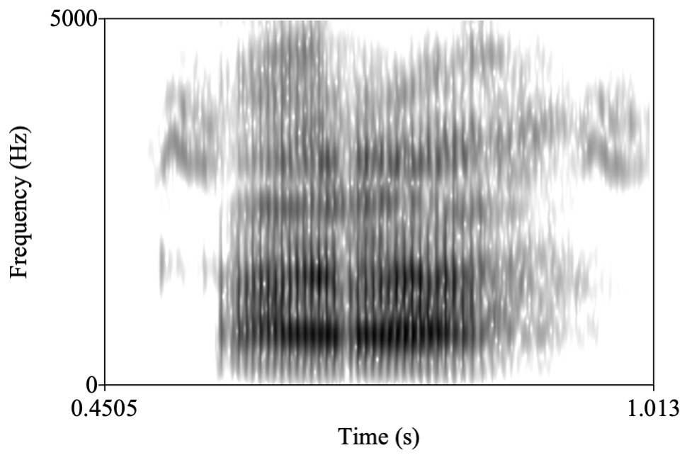

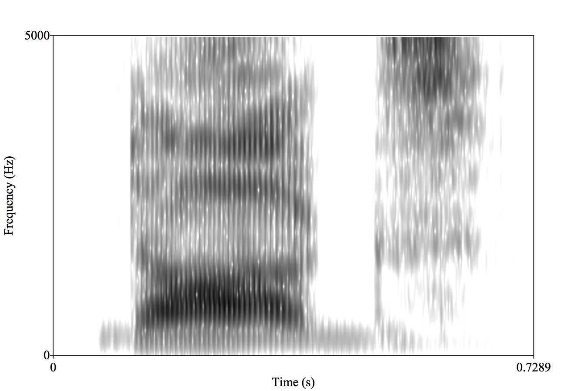


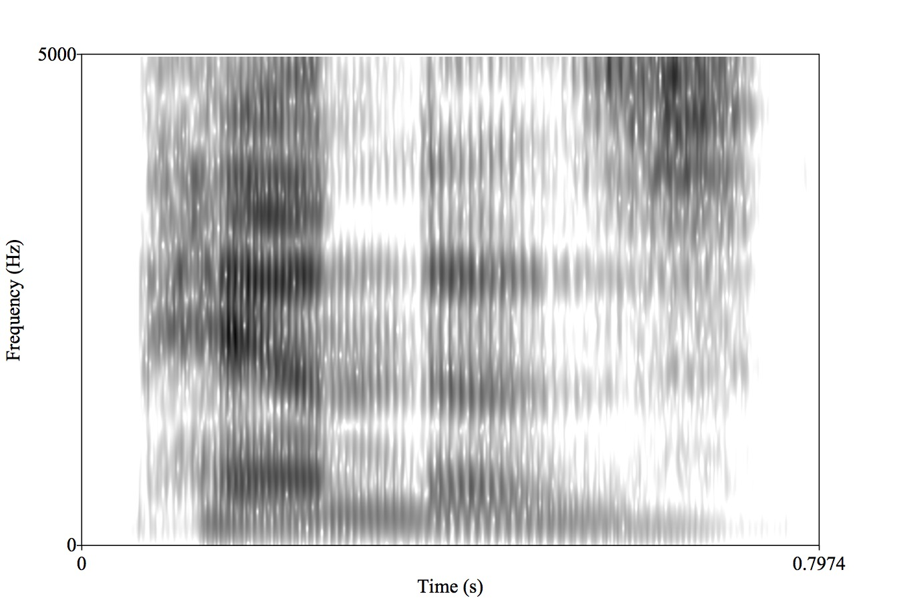
We have a spectrogram reading group!
Rob Hagiwara’s Monthly Mystery Spectrogram Webzone
If we don’t know what words sound like, we can’t teach computers what they sound like
Spectrograms give us great information about frequency, power, and time
Similar patterns are easy to confuse for humans and computers
This lets us understand a bit more about how ASR might work